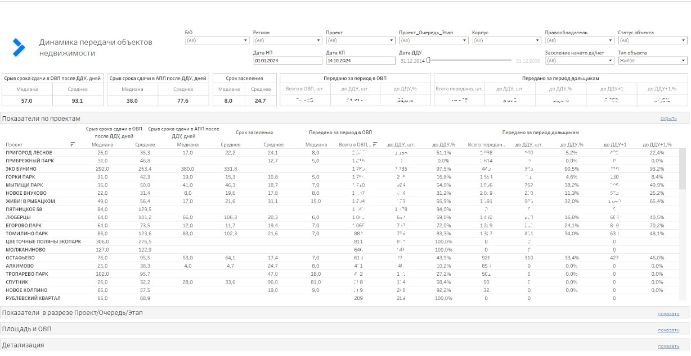

Динамика передачи объектов недвижимости
Дашборд для мониторинга ключевых дат строительства: ОВП, АПП, старт заселения, ДДУ и анализа взаимосвязей между этапами.
Использовался для управленческого контроля сроков и анализа средних показателей просрочки по этапам строительства.